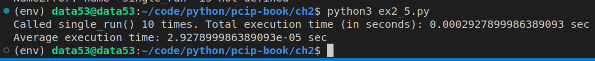
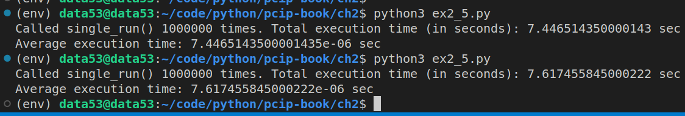

2.5 THE POWER OF ONE
EXERCISE 2.5. THE POWER OF ONE
Write a program that does the following ten times (so, ten full loops with the time computed):
- Randomly select a single, lowercase letter. This is the “preimage seed.”
- Use MD5 to compute the hash of this initial letter. This is the “test hash”.
- In a loop, iterate through all possible lowercase one-letter inputs.
- Hash each letter in the same way as before, and compare against the test hash.
- When you find a match, stop.
- Compute the amount of time it took to find a match.
How long, on average, did it take to find a match for a random preimage seed?
# ex2_5.py
import hashlib
import secrets
import timeit
from string import ascii_lowercase
def single_run():
def h(x: str) -> str:
'''returns the md5 digest of the string x.'''
return hashlib.md5(x.encode('utf-8')).hexdigest()
preimage_seed = secrets.choice(ascii_lowercase)
test_hash = h(preimage_seed)
for single_letter in ascii_lowercase:
if h(single_letter) == test_hash:
# found a match
break
return
if __name__ == '__main__':
COUNTER = 10
total_execution_time = timeit.timeit(
stmt="single_run()",
setup="from __main__ import single_run",
number=COUNTER,
)
print(f"Called single_run() {COUNTER} times. Total execution time (in seconds): {total_execution_time} sec")
print(f"Average execution time: {total_execution_time/COUNTER} sec")When COUNTER is 10. 
When COUNTER is 1 million. 